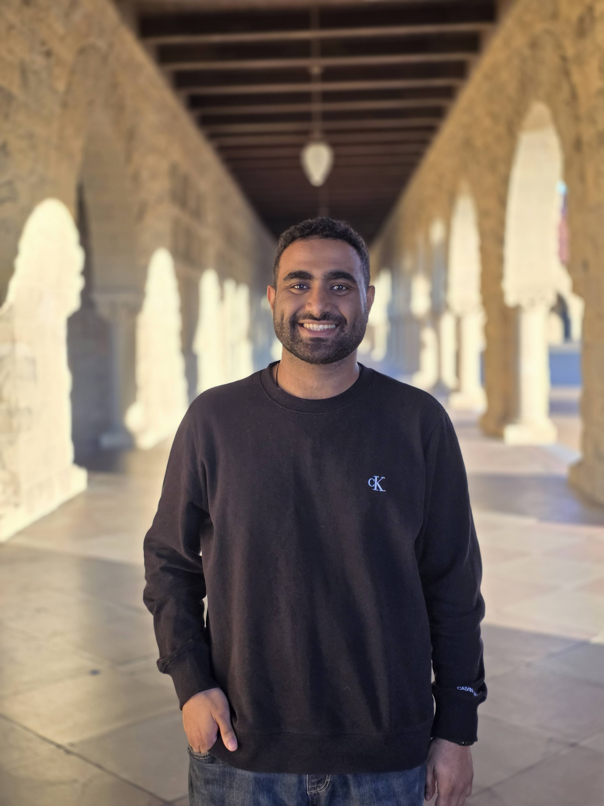

I am a PhD researcher at the Max Planck Institute for Software Systems, working at the intersection of speech & language modeling and computational neuroscience. My research aims to make better computational models of speech processing in the brain and investigate how brain data could also be utilised to improve pretrained models. I have done previous work on brain-tuning (speech models on human fMRI responses), showing that it can improve semantic representations, model-brain alignment, and cross-participant generalization. Most recently, I built RABBiT (NeurIPS 2026), a compact audio-to-fMRI foundation model that predicts speech-evoked brain responses of unseen participants zero-shot and adapts to a new person with about 10 minutes of data. My current research projects investigate efficient brain-tuning on large-scale datasets and how to use these improved models to automatically test hypotheses and discover mechanisms on how the brain organizes language processing.
I am broadly interested in representation learning, speech processing, natural language understanding, and leveraging brain data to build more human-like AI systems.
Education, research experience, publications, awards, and more.
Lifelong football fan and player — always up for a pickup game.
Love a fast team game on any court.
My favorite way to unwind and stay active.
Enjoy listening to and exploring a wide range of genres.
Hooked on a good documentary, whatever the topic.
Books on science, philosophy, and the occasional novel.
Love exploring new places, cultures, and cuisines.
From video games to board-game nights with friends.